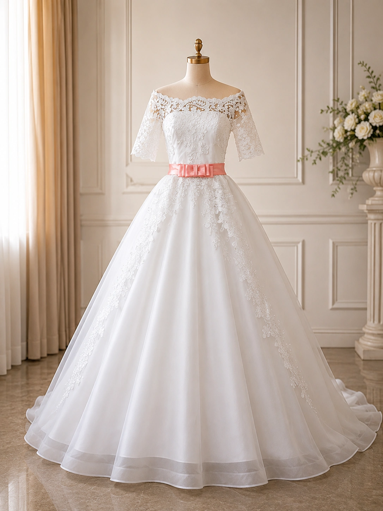
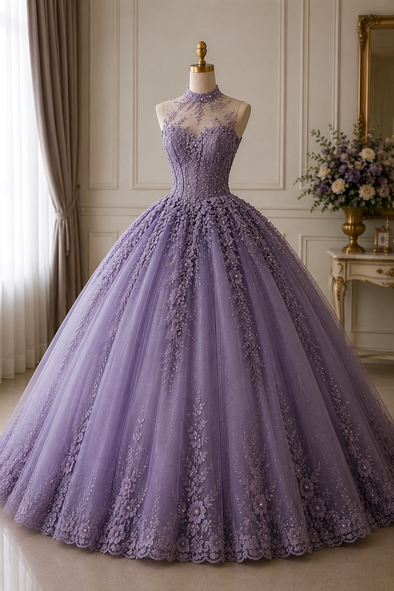
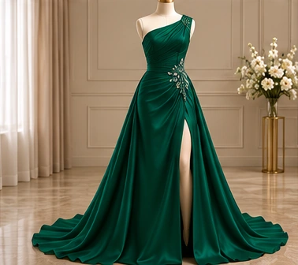

Línea
Un escote abierto enmarca los hombros y ordena la silueta.



Novias · Quince años · Ceremonia · Ocasiones
Siluetas que celebran quién eres y la historia que estás por vivir.
Descubrir colecciones↓01 / Esencia
AZ Moda reúne vestidos para novias, quince años y ocasiones especiales bajo una misma mirada: proporción, textura y movimiento en equilibrio.
De los blancos luminosos a los tonos profundos, cada silueta propone una forma distinta de habitar un momento importante.
02 / Colecciones
Explora cada diseño y amplía sus detalles.
03 / El arte de celebrar
Una novia y una quinceañera viven historias diferentes. AZ Moda las reúne desde el diseño: siluetas expresivas, texturas delicadas y una presencia que acompaña sin disfrazar.
“El vestido no crea el momento. Le da una forma que permanece.”Texto editorial provisional
04 / Anatomía de una pieza
Un escote abierto enmarca los hombros y ordena la silueta.
El motivo floral recorre el cuerpo y continúa sobre la falda.
La cinta coral concentra la mirada y define la cintura.
05 / Galería de fotos
Un archivo visual de vestidos, detalles y creaciones de AZ Moda. Esta galería crecerá con cada nueva historia.
Nuevas fotografías próximamente.
Desliza o utiliza las flechas para recorrer la galería.
Consulta privada
Solicita información o reserva una conversación con AZ Moda.
Solicitar información↗